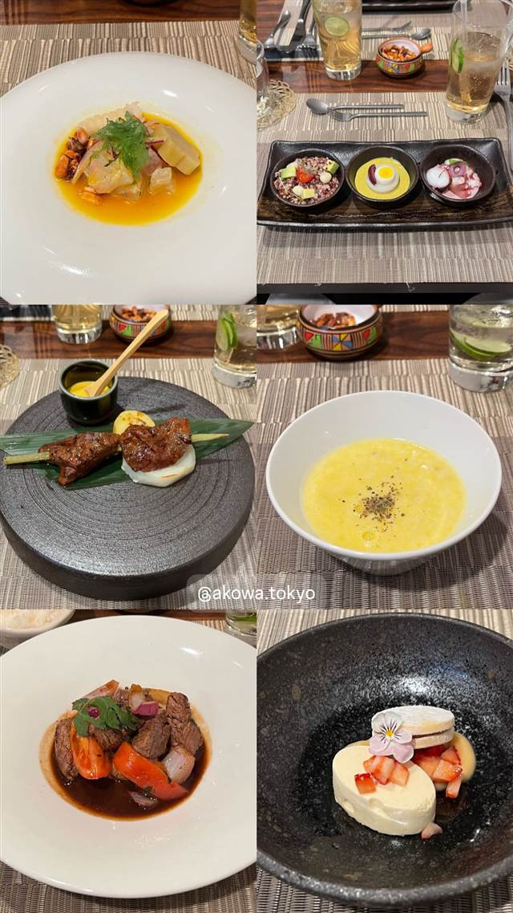
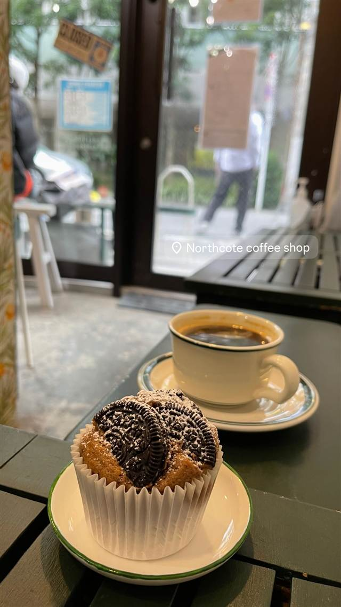
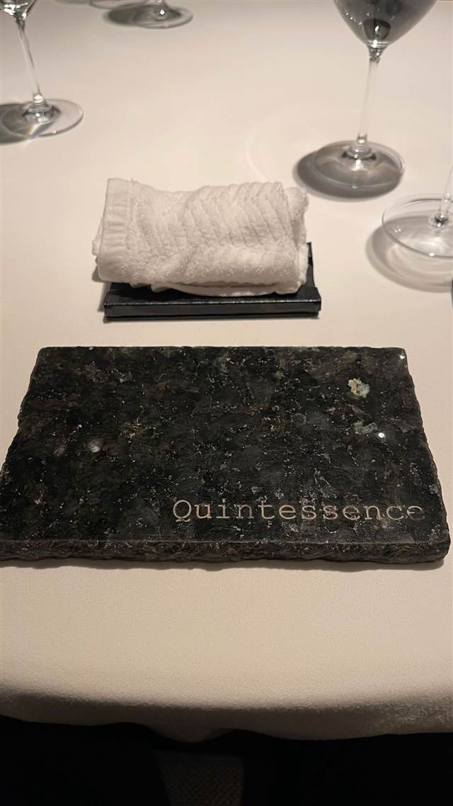
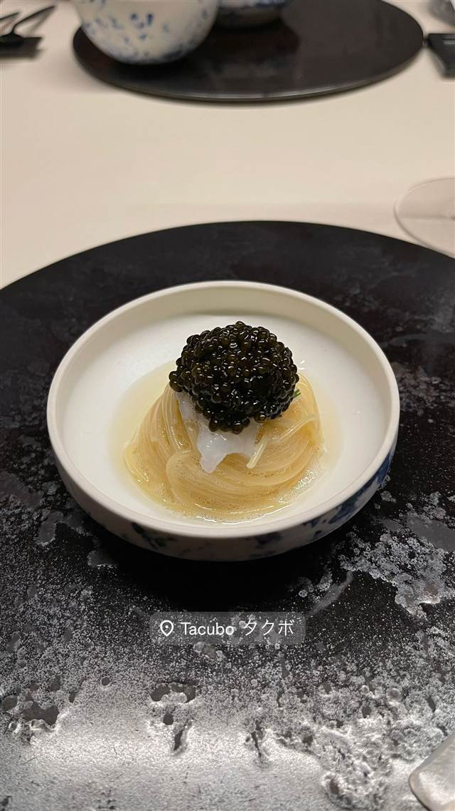
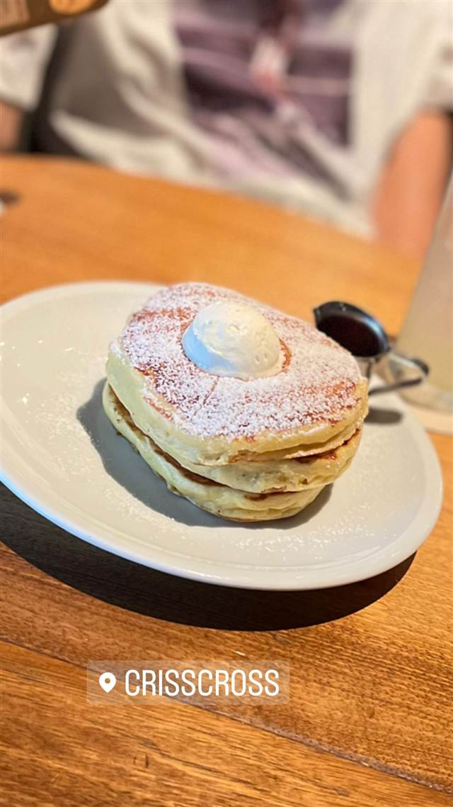
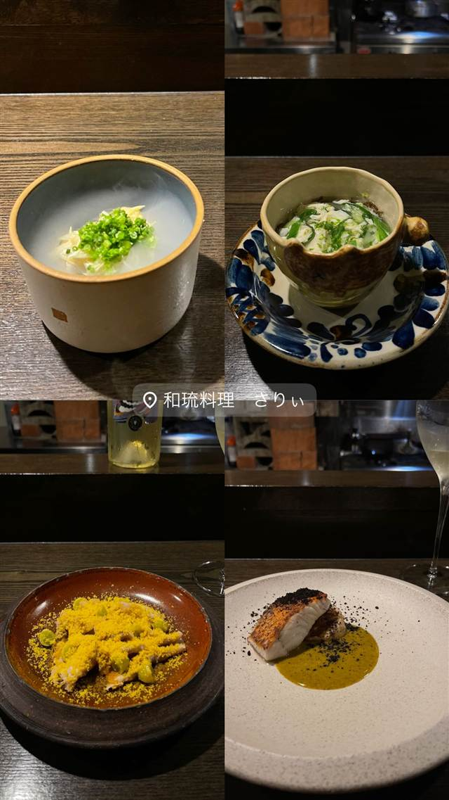

フレンチ · フレンチ · 南麻布
AKOWA（アコワ）
大使公邸の元専属シェフが作る日本初の本格ペルー料理
akowa.tokyo
WHY GO
駐日ペルー大使公邸で6年務めたシェフが作る日本初の本格ペルー料理店
2024年5月開業、南麻布（最寄りは白金高輪駅）のペルー料理店。駐日ペルー大使公邸の専属シェフを6年務めたWalter Rabajos氏が、フレンチの技法を生かしながら故郷ペルーの伝統料理を現代的に提供する、日本初とされる本格ペルー料理店。店名はアイマラ語で「相互扶助」を意味する。
TRIVIA
豆知識
- ジャンル表記は「フレンチ」となることがあるが実態はペルー料理店で、日本初の本格ペルー料理店と紹介されている
- 店名アコワはペルーの言語アイマラ語に由来し「相互扶助の精神」を意味する
- シェフは駐日ペルー大使公邸の専属シェフを6年間務めた経歴を持つ
REVIEWS
世間の評判
3.38食べログ
本格ペルー料理の丁寧な一皿
- 大使公邸出身シェフによる本格ペルー料理の質を評価する声が多い
- アットホームな雰囲気と丁寧な料理説明を好意的に捉える人が多い
- ランチはコスパが高いという声が多い
- ペルー料理に不慣れで説明が欲しいと感じる人もいる
食べログ 口コミ73件
| 創業 | 2024年5月開業 |
|---|---|
| 系譜 | ジャンルは「フレンチ」と紹介されることもあるが、実際は日本初とされる本格ペルー料理専門店 |
| 看板 | フレンチの技法を取り入れたペルー料理のコース（セビーチェなど伝統料理のモダンアレンジ） |
| こだわり | 地元食材を使い、フレンチ仕込みのソース技術で伝統的なペルー料理を現代的に再構成 |
| どこから | 都心 |
| 営業時間 | 月 休み 火〜土 12:00-15:00、17:30-22:00 日 12:00-15:00、17:30-21:00 |
| 予算 | 昼 ¥3,000～¥3,999 夜 ¥6,000～¥7,999 |
| 定休日 | 月曜 |
| 予約 | 予約可 |
| 場所 | 白金高輪駅 東京都港区南麻布2-13-13 |
| メモ | 白金高輪駅から徒歩約6分 |
食べたもの：コース料理
NEARBY
近い店・同じ系統の店
-

コーヒー 白金高輪 Northcote（ノースケット） 前身「NtS coffee」を引き継いだメルボルン地名由来のコーヒースタンド 昼 ～¥999 -

フレンチ 北品川 カンテサンス（Quintessence） 2007年から守り続けるミシュラン三つ星、おまかせコースのみ 夜 ¥30,000～¥39,999 -

フレンチ 代官山 TACUBO（タクボ） 暖炉の薪火で焼き上げる肉料理が看板の隠れ家イタリアン 夜 ¥40,000～¥49,999 -
 フレンチ 浅草
Nabeno-Ism（レストラン ナベノイズム）
頭のNを隠すと『あべの』になる店名のフレンチコース
昼 ¥20,000～¥29,999 夜 ¥40,000～¥49,999
フレンチ 浅草
Nabeno-Ism（レストラン ナベノイズム）
頭のNを隠すと『あべの』になる店名のフレンチコース
昼 ¥20,000～¥29,999 夜 ¥40,000～¥49,999
-

フレンチ 表参道 crisscross（クリスクロス） 緑豊かなテラス席で味わうパンケーキとフレンチトースト 昼 ¥1,000～¥1,999 夜 ¥2,000～¥2,999 -

フレンチ 美栄橋駅 和琉料理 さりぃ 北海道仕込みの店主が沖縄食材で仕立てる和琉コース 夜 ¥8,000～¥9,999